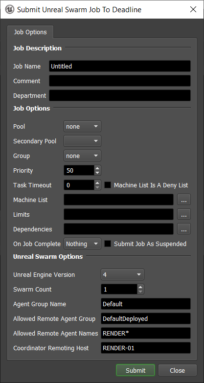
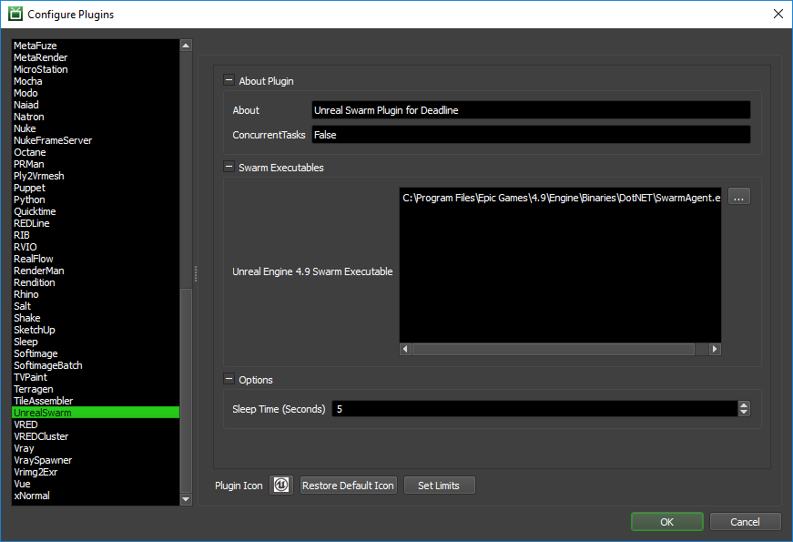

Unreal Swarm¶
Job Submission¶
You can submit Unreal Swarm jobs from the Monitor, which can be used to reserve Deadline Workers for distributed light calculations.
Submission Options¶
The general Deadline options are explained in the Job Submission documentation. The Unreal Swarm specific options are:
Unreal Engine Version: The version of Unreal Engine to use.
Agent Group Name: The name of the agent group that the machine will belong to.
Allowed Remote Agent Names: The remote machine filter string ( ‘ ‘, ‘,’ or ‘;’ delimited ).
Allowed Remote Agent Group: The name of the agent group jobs can be distributed to.
Coordinator Remoting Host: The name of the machine hosting the coordinator. This can be either a host-name or IP address.
Rendering¶
In order to render using Unreal Swarm you must have the Swarm Coordinator started on one of the computers. This can be found in: C:\Program Files (x86)\Epic Games\<version>\Engine\Binaries\DotNET, where <version> could be something like: 4.9.
On your rendering machine, open the Swarm Agent. In the settings tab of the swarm agent, set the AgentGroupName and AllowedRemoteAgentGroup to the same value. Set the Allowed Remote Agent Names to either the hostnames of the computers that are going to be participating if you know what they will be, otherwise you can set it to * which means that all computers are welcome. Finally, set the CoordinatorRemotingHost to the hostname of the computer that the Swarm Coordinator is being run on.
From within the Deadline Monitor open the UnrealSwarm Submitter found in Submit > 3D > UnrealSwarm Submission. Set the Swarm count to be the number of computers you that want to participate. Set the AgentGroupName, AllowedRemoteAgentGroup, AllowedRemoteAgentNames, CoordinatorRemotingHost to the same settings set in the Swarm Agent, then submit your job.
Once all of the tasks have been picked up by Deadline Workers, open the Unreal Engine 4 scene you want to build the lighting for. Select Build > Build Lighting Only and the Deadline Workers will begin to calculate the lighting.
After the building is done, you will need to suspend or complete the Unreal Swarm job in Deadline in order to release the Workers.
Plugin Configuration¶
You can configure the Unreal Swarm plugin settings from the Monitor. While in power user mode, select Tools -> Configure Plugins and select the UnrealSwarm plugin from the list on the left.
Note, if the executable supports a MAJOR.MINOR.REVISION (9.0.123) numbering system in its path, then you will need to configure the explicit exe path to the particular revision that you have installed on your machines. Deadline does not track every possible revision available or indeed where it might be custom installed to, so a studio should verify their exe paths are correct for each application version they choose to use with Deadline. Multiple exe paths can still be declared and the first one that is found on a particular Worker on a particular platform will be used from the exe list.
Swarm Executables
Unreal Engine 4.9 Swarm Executable: The path to Unreal Engine 4.9’s swarm agent used for rendering. Enter alternative paths on separate lines.
Options
Sleep Time (Seconds): The amount of time (in seconds) that the Unreal Swarm plugin will sleep before checking to see if it can close.
FAQ¶
Currently, there are no FAQs for this plugin.
Error Messages and Meanings¶
This is a collection of known Unreal Swarm error messages and their meanings, as well as possible solutions. We want to keep this list as up to date as possible, so if you run into an error message that isn’t listed here, please visit the Thinkbox Help Centre and let us know.
Currently, no error messages have been reported for this plugin.

{kind=link}
{kind=link}